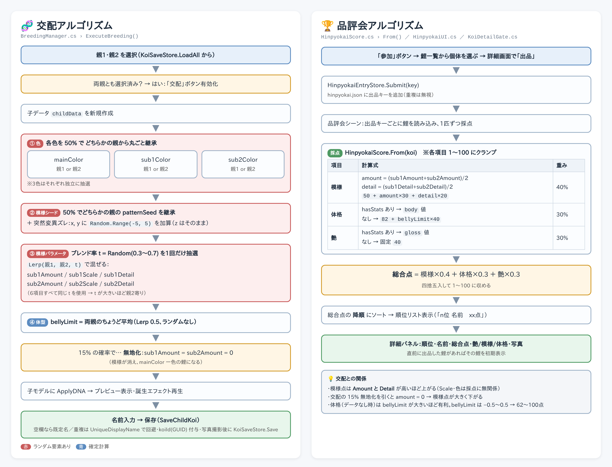
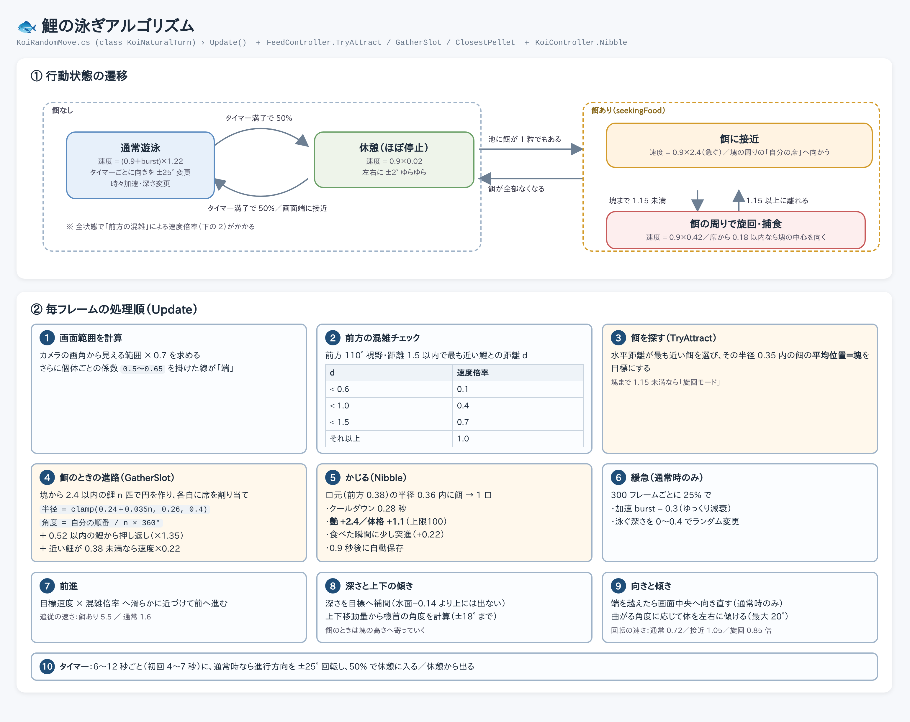
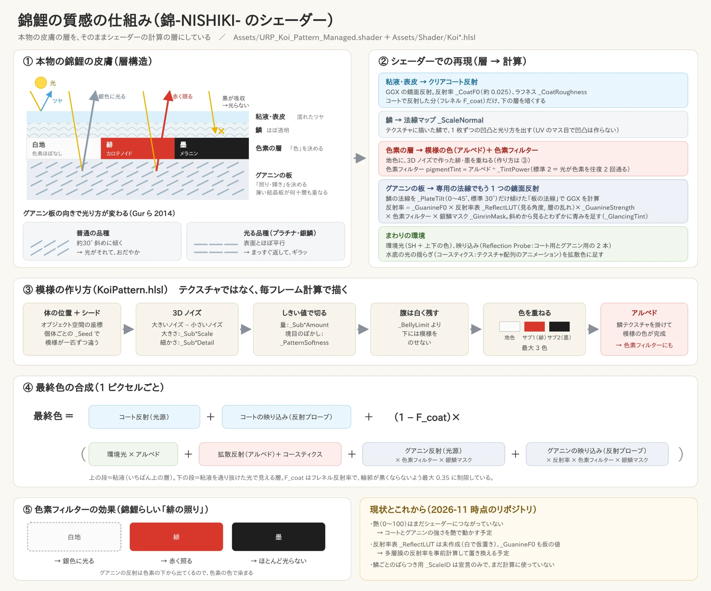

交配・品評会親から子への遺伝と、採点・順位の決め方

泳ぎ状態遷移と、毎フレームの移動処理

質感（シェーダー）皮膚の層構造を計算の層で再現
🧬 交配・品評会
Assets/Script/BreedingManager.cs ・ HinpyokaiScore.cs ・ HinpyokaiUI.cs ・ KoiDetailGate.cs
- 色は各色ごとに 50% でどちらかの親から継承。模様パラメータは 0.3〜0.7 の比率で両親を混ぜる
- 模様シードには ±5 の突然変異ズレ、15% の確率で無地化
- 総合点 = 模様×0.4 ＋ 体格×0.3 ＋ 艶×0.3（艶・体格は餌やりで上がる）
クリックで拡大
🐟 泳ぎ
Assets/Script/KoiRandomMove.cs ・ FeedController.cs ・ KoiController.cs
- 餌なし：通常遊泳 ⇄ 休憩をタイマーで切り替え。画面端では中央へ向き直す
- 餌あり：塊の周りに円形に席を割り振って集まり、近づいたら旋回しながら捕食
- 1 口ごとに 艶 +2.4／体格 +1.1。前方の混雑度で常に減速がかかる
クリックで拡大
✨ 質感（シェーダー）
Assets/URP_Koi_Pattern_Managed.shader ・ Assets/Shader/Koi*.hlsl
- 粘液・鱗・色素・グアニン板という本物の皮膚の層を、シェーダーの計算の層に対応させている
- 模様はテクスチャではなく 3D ノイズで毎フレーム計算
- グアニン反射が色素フィルターを通ることで「緋の照り」を表現
クリックで拡大